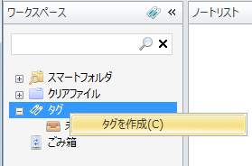
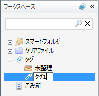
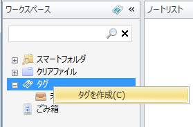
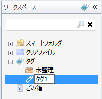

タグを編集する
タグを使ってノートを整理してみましょう。 まずはタグを作ります。
新しいタグを作るには，ワークスペースビューで「タグ」を右クリックして， コンテキストメニューの「タグを作成」を選択します。

タグが作られるので，タグの名前を入力します。

タグを使ってノートを整理してみましょう。 まずはタグを作ります。
新しいタグを作るには，ワークスペースビューで「タグ」を右クリックして， コンテキストメニューの「タグを作成」を選択します。

タグが作られるので，タグの名前を入力します。
